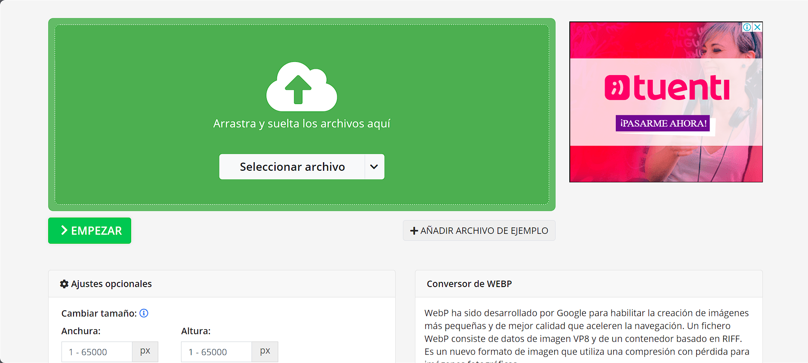

Convertir imagen a WebP

Este conversor online gratuito a WebP te permite convertir tus imágenes al formato WebP utilizado por Google. Sube tu foto o indica un link a la imagen y haz click en "convertir archivo". El fichero se convertirá de forma instantánea y podrás desargar la imagen WebP en cuanto la hayas convertido.